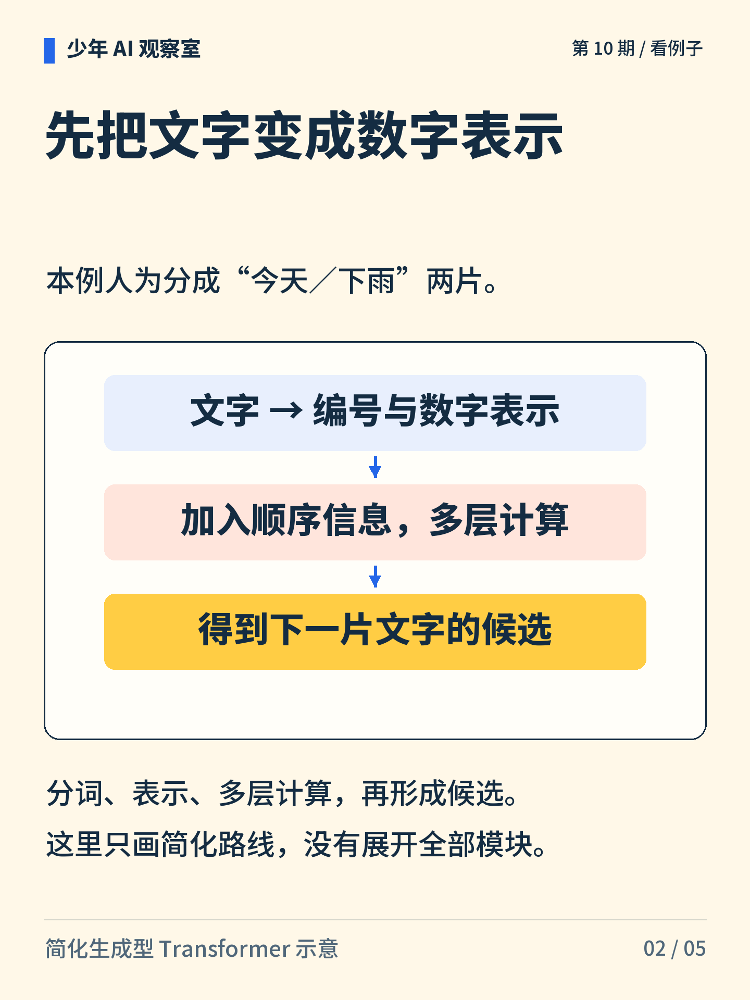
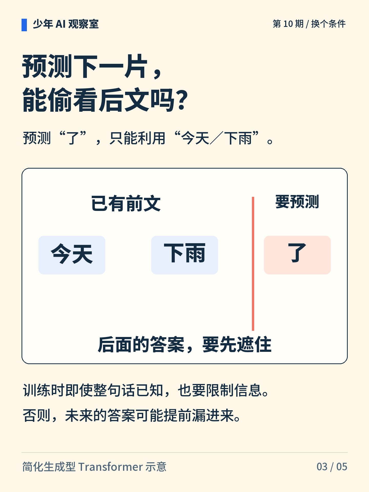
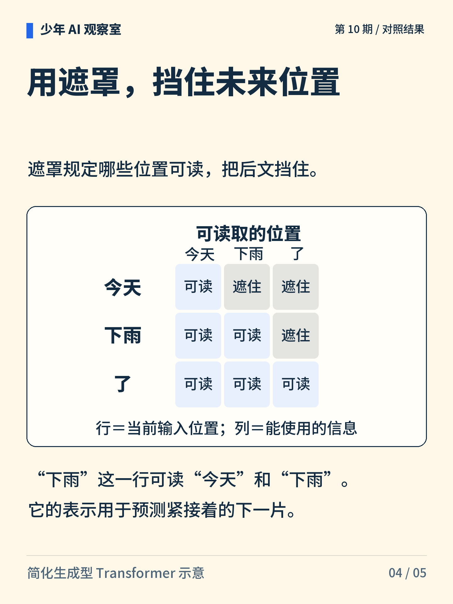
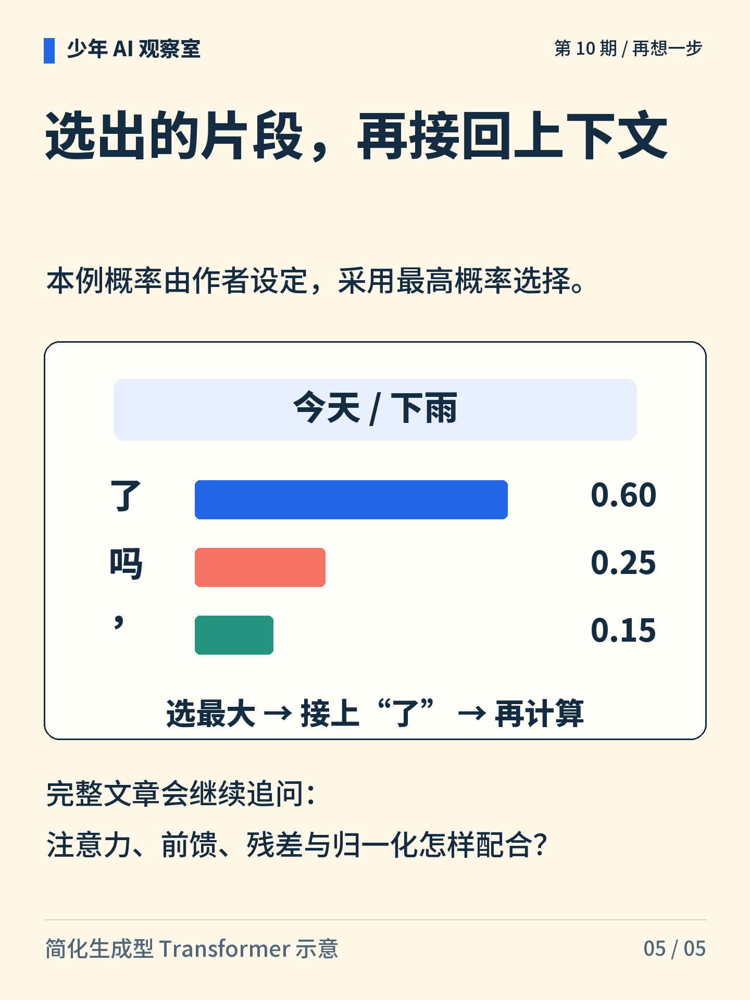

少年 AI 观察室 · 第 10 期
下一片文字，是怎样接出来的？
从“今天／下雨”到下一片“了”，先把文字变成一组组数字，只利用允许读取的前文，再计算候选概率。

图解文字
“今天”“下雨”进入计算流程，产生下一片“了”，新片段再进入上下文。

图解文字
文字变成编号与数字表示，加入顺序信息，经多层计算后得到下一片的候选概率。

图解文字
预测“了”时，当前前文是“今天／下雨”。不能让待预测的答案提前进入这一位置的表示。

图解文字
遮罩三行分别允许读取 1、2、3 个位置。“下雨”行只读今天和下雨；“了”行可读自身，用于后续预测。

图解文字
虚构候选概率为了 0.60、吗 0.25、逗号 0.15，总和为 1。本例选最大的“了”，接回前文后继续计算。
想一想
训练时已经有整句话，预测下一片时能偷偷看后面吗？
展开参考思路
这里的生成型模型不能让后文答案进入当前预测。训练时虽然整句已知，也用因果遮罩限制各位置只读取自身及前文。“下雨”的表示用于预测“了”；“了”这一行读到自身，是为了预测它之后的片段。
预测下一片文字时，每个位置只能使用允许读取的信息。
这里只画生成型 Transformer 的简化路线。切分和候选概率由作者设定，没有展开全部模块，也不代表所有 Transformer 都使用同一遮罩。
正文首图为 AI 辅助生成的概念插画；第 2—5 张图按核对过的文字与规则绘制。
延伸阅读资料
文中算例与图解用于说明原理，不是实际模型的测评结果。研究结论对应以下资料。〔1〕 Vaswani 等，2017，Attention Is All You Need，第 3 节。arXiv:1706.03762。
https://arxiv.org/abs/1706.03762
〔2〕 Radford 等，2018，Improving Language Understanding by Generative Pre-Training，第 3 节（技术报告）。
https://cdn.openai.com/research-covers/language-unsupervised/language_understanding_paper.pdf
〔3〕 Ba、Kiros、Hinton，2016，Layer Normalization。arXiv:1607.06450。
https://arxiv.org/abs/1607.06450
书目信息沿用原稿，本轮未重新核验外部网页的可访问性。